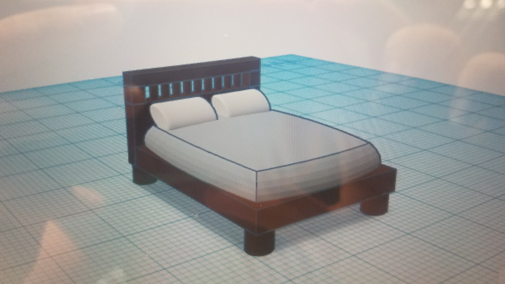
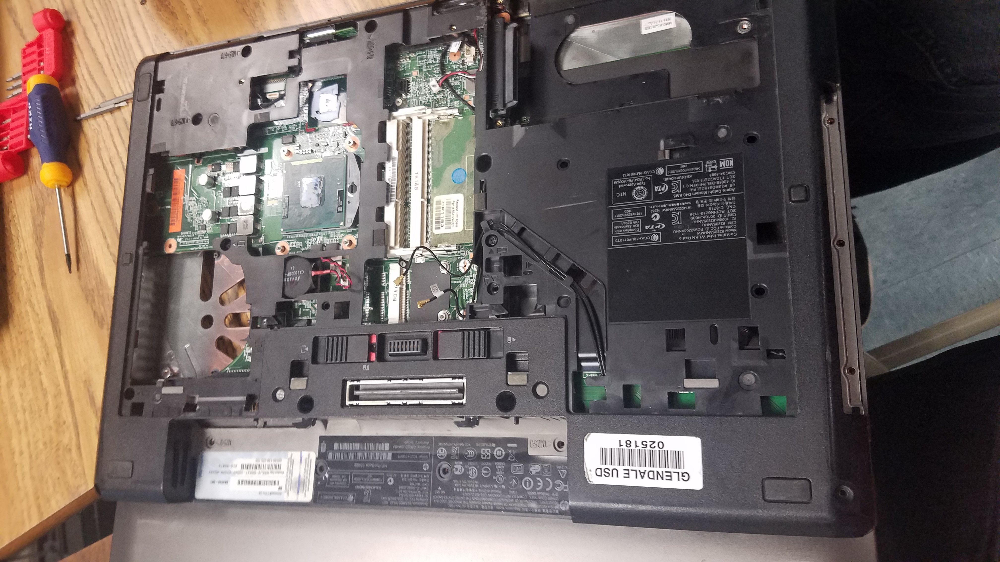
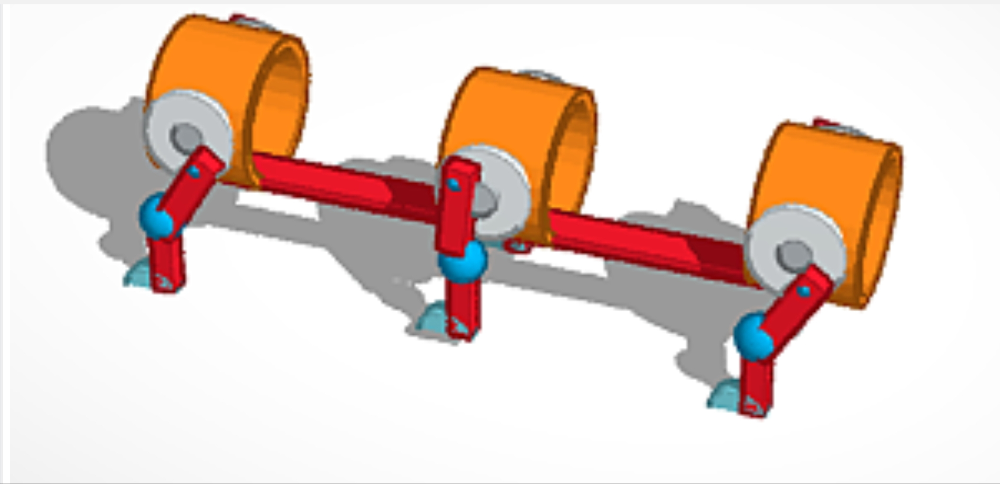
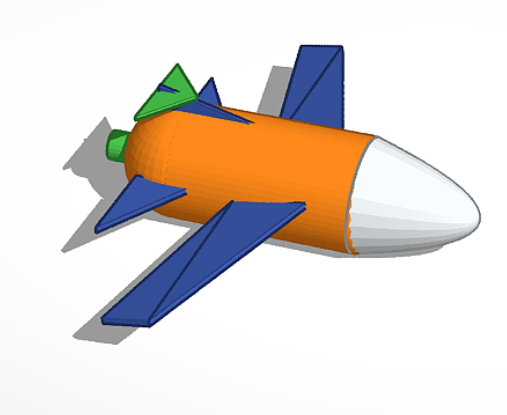
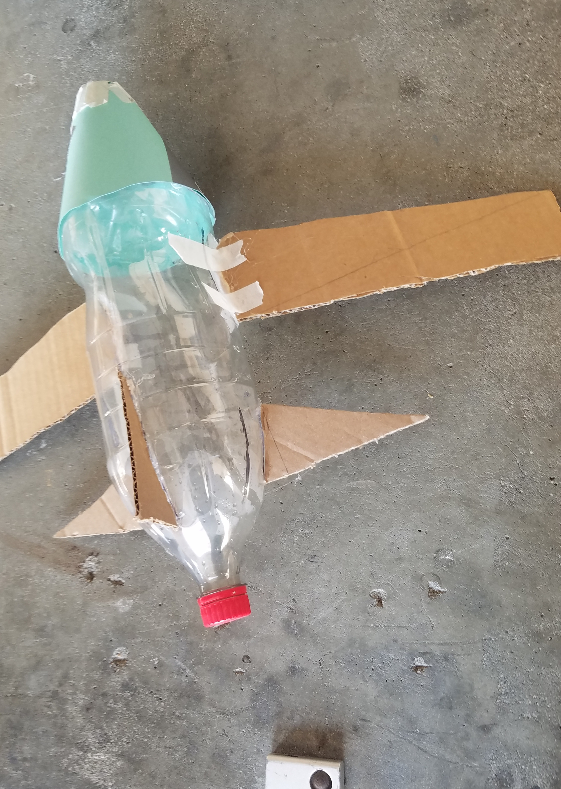
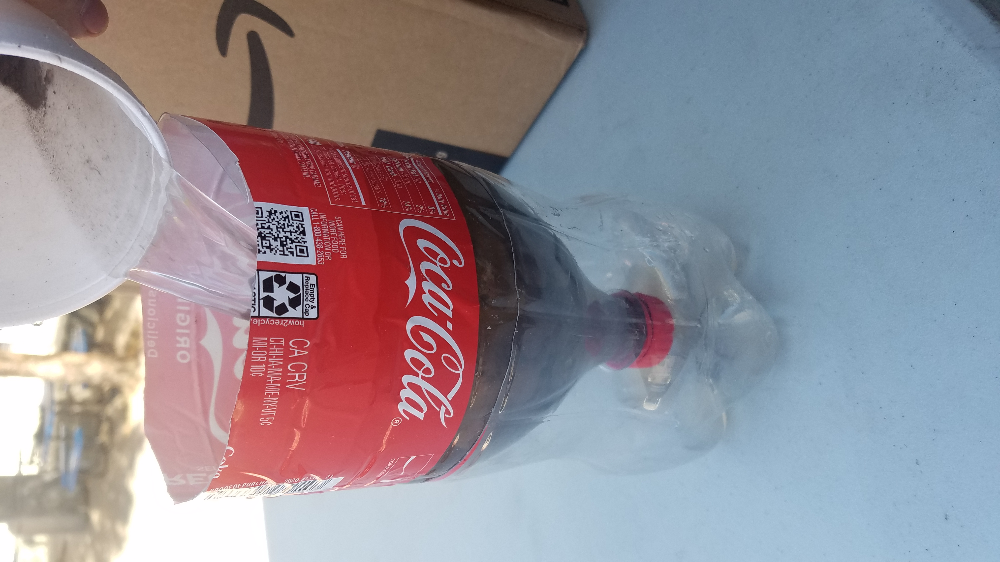
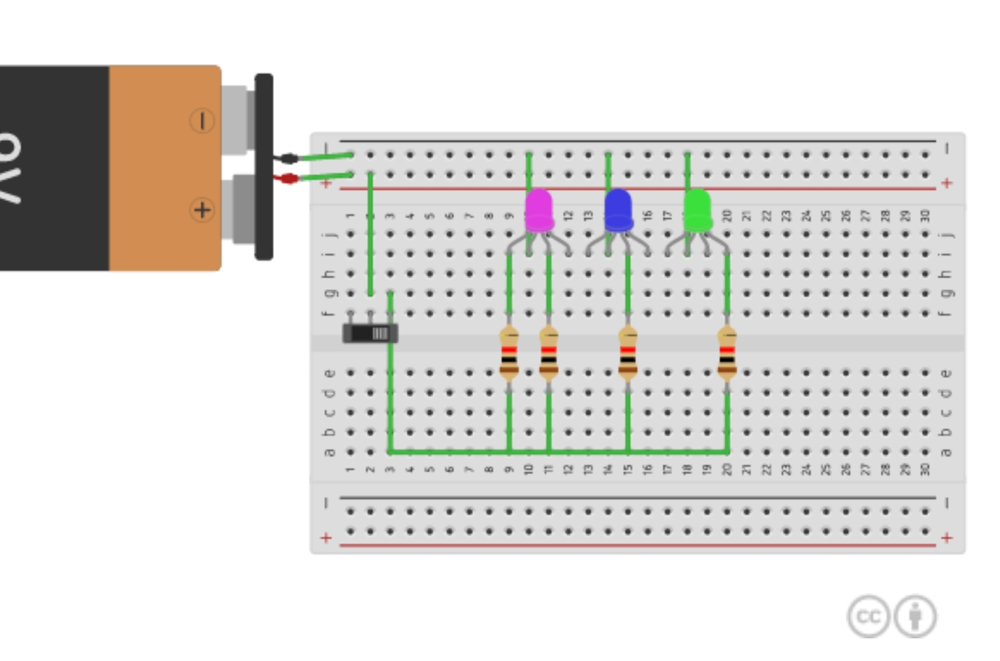

Engineering Website IsaacFlower
STAR WARS EPISODE III: REVENGE OF THE SITH by George Lucas \ ___ . June 2003 Fourth Draft ( ( ••. ' ' '- 1 EXT. SPACE A long time ago in a galaxy far, far away, ... A vast sea of stars serves as the backdrop for the Main Title, followed by a rollup, which crawls into infinity. War! The Republic is crumbling under attacks by the ruthless Sith Lord, Count Dooku. There are heroes on both sides. Evil is everywhere. In a stunning move, the fiendish droid leader, General Grievous, has swept into the Republic capital and kidnapped Chancellor Palpatine, leader of the Galactic Senate. As the Separatist Droid Army attempts to flee the besieged capital with their valuable hostage, two Jedi Knights lead a desperate mission to rescue the captive Chancellor .... 1. PAN DOWN to reveal a REPUBLIC ATTACK CRUISER. Continue to PAN with the Cruiser as TWO JEDI STARFIGHTERS enter and head toward an enemy Battle Cruiser. TRUCK with the Jedi Fighters as they maneuver in unison, dodging flack and enemy laser fire. R2-D2 is on Anakin's ship. R4-Pl7 is on Obi-Wan's ship. A giant space battle is revealed as the tiny Jedi ships continue their assault in a synchronous ballet. 2 INT. OBI-WAN'S STARFIGHTER COCKPIT - SPACE OBI-WAN bounces through the flack with a frown. His ship rocks violently. 3 INT. ANAKIN'S STARFIGHTER COCKPIT - SPACE ANAKIN smiles as he blasts a TRADE FEDERATION DROID DROP FIGHTER. ANAKIN There isn't a droid made that can out fly you, Master, and no other way to get to the Chancellor ... (.· OBI-WAN Look out, four droids inbound ... 4 EXT. CORUSCANT - SPACE BATTLE The TWO JEDI FIGHTERS swerve in unison as FOUR TRADE FEDERATION DROID DROP FIGHTERS attack. After several clever moves by the Jedi, two of the FEDERATION DROID DROP FIGHTERS collide with each other in a ball of flame. 5 INT. OBI-WAN'S STARFIGHTER COCKPIT - SPACE OBI-WAN struggles to maintain control of his ship. OBI-WAN We've got to split them up. ANAKIN Break left, fly through the guns on that tower. 2. OBI-WAN flies to the left of a huge tower on a REPUBLIC CRUISER. The TWO DROID DROP FIGHTERS follow. OBI-WAN Easy for you to say I always the bait? ANAKIN why am Don't worry. I'm corning around behind you. OBI-WAN deftly maneuvers around a large Starship's --· ---9'H''1perstructure, but the TWO DROID FIGHTERS stay on his tail, BLASTING him with intense laser fire. OBI-WAN Anakin, they're all over me! ANAKIN Dead ahead! Closing ... lock onto him, Artoo ... ARTOO BEEPS his reply as ANAKIN swoops in for the kill. ANAKIN BLASTS one of the DROID DROP FIGHTERS. It EXPLODES. ( I ' ANAKIN (continuing, laughs) We got him, Artoo! ANAKIN BLASTS away at the second DROID DROP FIGHTER as ARTOO BEEPS an angry warning. ANAKIN I copy, Artoo. OBI-WAN I'm going down on the deck. ANAKIN Good idea ... I need some room to maneuver. 3. OBI-WAN dives toward the surface of one of the larger TRADE FEDERATION BATTLESHIPS and is forced to fly through a maelstrom of laser flack. He skims the surface, followed by the DROID DROP FIGHTER, which is followed by ANAKIN. ANAKIN (continuing) Cut right. Do you hear me?! Cut right. Don't let him get a handle on you. Come on, Artoo, lock on! Lock on! ARTOO BEEPS. The crosshairs merge on the DROID DROP FIGHTER. OBI-WAN Hurry up! I don't like this! OBI-WAN flies through a narrow gap between two towers on a Battleship. The DROID DROP FIGHTER hits one of Obi-Wan's wings with a laser blast, and parts of the ship go flying around ObiWan's Astro Droid, ARFOUR. Ouch! OBI-WAN (continuing) R-4 BEEPS a blue streak. ( OBI-WAN (continuing) Don't even try to fix it, Arfour. I've shut it down. ANAKIN We' re locked on . . . we've got him ... ANAKIN drops in behind the DROID DROP FIGHTER and blows him apart. ARTOO SQUEALS with delight. ANAKIN (continuing) Yeah! We got him ... good going, Artoo. OBI-WAN Next time you're the bait ... Now let's find the Command Ship and get on with it ... R-4 BEEPS a blue streak. ANAKIN Lock onto them, Artoo. Master, General Grievous's ship is directly ahead. ARTOO BEEPS a reply, and it reads out in Anakin's cockpit. ANAKIN (continuing) The one crawling with vulture droids. 6 INT. OBI-WAN'S STARFIGHTER COCKPIT - SPACE OBI-WAN I see it. Oh, this is going to be easy. Ahead is a TRADE FEDERATION CRUISER with bat-like DROID VULTURE FIGHTERS stalking around on the hull. The VULTURE FIGHTERS transform into flight configuration, lift off the CRUISER, and attack the JEDI STARFIGHTERS. 4. ( ANAKIN Corne on, Master. OBI-WAN Not this time. There's too much at stake. We need help. Odd Ball, do you copy? ODD BALL (OS) Copy, Red Leader. OBI-WAN Mark my position and form your squad up behind me ... 7 INT. ODD BALL'S FIGHTER COCKPIT - SPACE ODD BALL We're on your tail, General Kenobi. Set S-foils in attack position. 5. The protective ray shield lowers on the main hangar of the TRADE FEDERATION CRUISER, and six new DROID TRI-FIGHTERS emerge and join the DROID VULTURE FIGHTERS heading toward the Jedi. The JEDI STARFIGHTERS extend the stability foils on the ends of their wings. 8 INT. ANAKIN'S FIGHTER COCKPIT - SPACE ANAKIN This is where the fun begins. Ten Vulture Droids straight ahead, corning down the left side. ARTOO BEEPS a worried message. OBI-WAN Add five Tri-fighters on the right ... ANAKIN I'm going head to head. See you. OBI-WAN Take it easy, Anakin. { ' ' Four Clone Fighters move into formation behind the Jedi. ODD BALL I'm on your right, Red Leader. ANAKIN Incoming!! ARTOO SQUEALS as five DROID TRI-FIGHTERS pass by at high speed on the right. OBI-WAN Five more on the right! Four more VULTURE DROID FIGHTERS pass at high speed from the left. All hell breaks loose. OBI-WAN and ANAKIN continue to fly in unison, backing up each other. ARTOO SQUEALS. ANAKIN Here we go. The Jedi ships split up and make a quick loop around the DROID TRI-FIGHTERS, ending up behind them. BLASTING away. The DROID TRI-FIGHTERS EXPLODE. OBI-WAN I'm going high and right. ANAKIN Hang on. There are four more of them. OBI-WAN Stay with me ... swing back and right ... help me engage. Back off ... Let them pass between us. ANAKIN I'm coming around. I'm coming around on your tail. OBI-WAN All right, engage ... and hurry. These droids are all over me like a rash. 6. (,, . ( \ •. In one incredible move, ANAKIN swings· in behind the DROID TRIFIGHTERS, blowing them away one by one until there is only one left. ARTOO CHIRPS. 7. ARTOO lets out a HOWL as ANAKIN accelerates past the last DROID TRI-FIGHTER, slams on his brakes, flips the Fighter around, and BLASTS the Fighter from the front. ARTOO BEEPS frantically as they fly through the debris of the destroyed ships. ANAKIN looks behind him. ANAKIN How many back there. Artoo? (Artoo beeps) Three ... (continuing) Four ... that's not good. OBI-WAN Anakin, you have four on your tail. ANAKIN I know. I know! OBI-WAN Four more closing from your left. ANAKIN I know. I know! OBI-WAN Break right and go high. ANAKIN I'm-going ww and left. Obi-Wan shakes his head. OBI-WAN ( to himself) He still has much to learn. ANAKIN swoops low and skims across a TRADE FEDERATION BATTLESHIP, dodging flack as ARTOO bounces along, trying to get out a sentence . ( ·, ANAKIN Hang on, Artoo. Obi-Wan, do you copy? I'm going to pull them through the needle ... OBI-WAN Too dangerous. First Jedi rule: "Survive." ANAKIN Sorry, no choice. Corne down here and thin them out a little. OBI-WAN drops in behind the DROID VULTURE FIGHTERS chasing Anakin. ARFOUR BEEPS to OBI-WAN. OBI-WAN Just keep me steady ... hold on ... not yet ... now break left. 8. OBI-WAN fires as he swings across the back of the VULTURE DROIDS, BLASTING four of them away. ANAKIN heads for a trench along the surface of one of the Trade Federation Battleships. He flies into the trench, which ends in a conning tower with a small slit between two main struts. OBI-WAN (continuing) You'll never get through there, Anakin. It's too tight. ARTOO BEEPS nervously. ANAKIN Easy, Artoo ... we've done this before. OBI-WAN Use the Force, think yourself through, the ship will follow. ARTOO SQUEALS in a panic. On the view screen Artoo's squeal reads out, "WE'RE NOT GOING TO MAKE IT." ANAKIN Wrong thought, Artoo. ANAKIN slips through the narrow gap. The trailing VULTURE DROID FIGHTERS CRASH. ANAKIN (continuing) I'm through. 9. OBI-WAN continues to fire on the VULTURE DROID FIGHTERS, driving them into the EXPLOSION. A CLONE fighter is hit and explodes, spewing debris. The CLONE PILOT spins off into space. Finally, OBI-WAN peels off and swings around, pulling up alongside ANAKIN. CLONE FIGHT SQUAD SEVEN battles the DROIDS. ODD BALL There are too many of them. CLONE PILOT 2 I'm on your wing. Break left. Break left. They're all over me. Get them off my ... ANAKIN I'm going to go help them out! OBI-WAN No, no! They are doing their job so we can do ours. Head for the Command Ship! Another CLONE fighter is hit, bursts into flames, and spins off into space. A VULTURE DROID FIGHTER-rai-ses its head to locate. its target and fires missiles at them. ANAKIN Missiles! Pull up! ANAKIN and OBI-WAN break right and left, and the missiles follow them. ANAKIN does a barrel roll spin, causing the missiles following him to collide and EXPLODE. Two missiles continue to chase OBI-WAN. He banks sharply to the right, then to the left, causing one of the missiles to overshoot. C': ,f ( 10. OBI-WAN They overshot us ... The second missile streaks next to Obi-Wan's Fighter and EXPLODES. Obi-Wan•s ship rocks, and R-4, SCREAMS as the Starfighter rips through the explosion. Debris flies all around them. ANAKIN They're coming around! OBI-WAN All right, Arfour. No, no. Nothing too fancy. ANAKIN Surge all power units. Artoo! Stand by the reverse thrusters. ANAKIN spins his starfighter. The missiles spin and collide. ANAKIN We got 'em. Artoo! Two missiles continue to track Obi-Wan. OBI-WAN Flying is for droids. Suddenly, OBI-WAN shudders, and his ship starts to plummet toward the surface of the Trade Federation Cruiser. The trailing missiles fly into what looks like debris, and detonate. Five silver balls fly out of the debris and attach themselves to the -------Ship. The-balls pop open, revealing SMALL BUZZDROIDS that begin to crawl across the surface like spiders. ( OBI-WAN (continuing) I'm hit! Anakin? ANAKIN I see them ... Buzz Droids. The BUZZ DROIDS crawl across Obi-Wan's ship and start to tear it apart. SPARKS ERUPT where the BUZZ DROIDS break into the wiring. One of the BUZZ DROIDS goes after ARFOUR. ( -.. ·.,, .t ,,,,_.,; OBI-WAN Arfour, be careful. You have one ... ARFOUR's head gets ripped off and flies away. OBI-WAN Oh dear. They're shutting down all the controls. ANAKIN Move to the right so I can get a clear shot at them. OBI-WAN The mission. Get to the Command Ship. Get the Chancellor! I'm running out of tricks here. 11. ANAKIN moves into position just off Obi-Wan's left side and angles his ship so his guns are pointing at the DROIDS crawling over Obi-Wan's Starfighter. ANAKIN fires and vaporizes the TWO BUZZ DROIDS, along with the left wing of Obi-Wan's ship. OBI-WAN (continuing) In the name of ... ANAKIN Steady . . . steady ... OBI-WAN Anakin, hold your fire ... hold your fire. You're not helping here. ANAKIN I agree, bad idea. Swing right ... ease over ... steady ... OBI-WAN Wait ... wait ... I can't see a thing! My cockpit's fogging. They're all over me, Anakin. ANAKIN Move to the right. ·-~·-----·--- ( •_._, . (. ( OBI-WAN Hold on, Anakin. You're going to get us both killed! Get out of here. There's nothing more you can do. ANAKIN I'm not leaving without you, Master. 12. ANAKIN moves his ship next to OBI-WAN's and tries to physically knock the BUZZ DROIDS off. There are five left. He manages to get one off, but badly dents OBI-WAN's ship in the process. One of the BUZZ DROIDS tears apiece off of the front of Obi-Wan's ship. Flames burst out, and more smoke billows out, obscuring the Jedi's view. ANAKIN knocks off three of the BUZZ DROIDS and the fourth crawls out onto Anakin's ship and starts attacking ARTOO. ARTOO fights the BUZZ DROID. OBI-WAN Blast it I can't see ... my controls are gone. ANAKIN Get 'em, Artoo. Watch out! OBI-WAN Artoo, hit the buzz droid's center eye. ARTOO extends an arm and aims a stream of electricity at the swerving BUZZ DROID. The BUZZ DROID is hit squarely in the eye and falls off the ship. ANAKIN Yeah, you got him! OBI-WAN Great, Artoo. ANAKIN Stay on my wing ... the General's Command Ship is dead ahead. Easy pull up ... Head for the hangar. (_ ( OBI-WAN Have you noticed the shields are still up? ANAKIN Oh?!? Sorry, Master. ANAKIN streaks ahead of OBI-WAN's disintegrating Jedi Fighter and blasts the shield generator. It SPARKS and EXPLODES. OBI-WAN Oh, I have a bad feeling about this. 9 INT. MAIN HANGAR - TRADE FEDERATION CRUISER 13. The shield door drops away, and OBI-WAN crashes on the deck of the hangar bay, engulfed in a FANTAIL OF SPARKS. A set of blast doors starts SLAMMING shut across the hangar opening, as material is sucked into space. ANAKIN maneuvers around the oncoming junk and flies into the hangar just as the blast doors SLAM shut. OBI-WAN ignites his light saber and cuts his way out of the cockpit. He jumps dear just as his ship EXPLODES. BATTLE DROIDS rush at him from all directions. ANAKIN jumps out of his ship and cuts his way through the BATTLE DROIDS to where OBI-WAN is fighting. ARTOO pops out of the ship and follows ANAKIN. OBI-WAN Artoo, locate the Chancellor. ANAKIN Tap into the ship's computers. They cut down the last of the droids and follow ARTOO over to a computer wall socket. The two JEDI fight off FOUR MORE DROIDS as ARTOO tries to find the Chancellor. Finally, a HOLOGRAM of the Trade Federation ship appears. OBI-WAN The Chancellor's signal is corning from right there. The observation platform at the top of that spire. ANAKIN I sense Count Dooku ... OBI-WAN I sense a trap. ANAKIN Next move? OBI-WAN Spring the trap. The JEDI start to leave; ARTOO follows. The JEDI stop and turn to ARTOO. ANAKIN Artoo, go back. I need you to stay with the ship. OBI-WAN Here, take this, and wait for orders. OBI-WAN tosses the comlink to ARTOO. 10 INT. BRIDGE - TRADE FEDERATION CRUISER 14. GENERAL GRIEVOUS enters the bridge of the TRADE FEDERATION cruiser followed by his TWO BODYGUARDS. He walks to the front of the bridge and stands in front of the NEIMOIDIAN CAPTAIN. GENERAL GRIEVOUS What's the situation, Captain? CAPTAIN TWO Jedi have landed in the main hangar bay. GENERAL GRIEVOUS Just as Count Dooku predicted. 11 INT. HANGAR - TRADE FEDERATION CRUISER ANAKIN and OBI-WAN head for the elevator. A door opens in the hallway and two of GENERAL GRIEVOUS's BODYGUARDS confront the JEDI. C BODYGUARD I General Kenobi, Anakin Skywalker. We've been waiting for you. OBI-WAN We are here to relieve you of Chancellor Palpatine, not join him. As a dozen more droids join the group, the JEDI ignite their lightsabers and stand back-to-back. OBI-WAN Anakin ... ANAKIN Ready. 15. ANAKIN and OBI-WAN use their lightsabers and cut a large circle in the floor. 12 INT. GENERATOR ROOM - TRADE FEDERATION CRUISER The TWO JEDI cut their way down several floors into a large generator room. Huge EXPLOSIONS outside the ship have caused several large pipes overhead to break, and fluid is spewing everywhere. The Jedi get up and turn off their light sabers. ANAKIN dips his hand into the fluid and sniffs it. OBI-WAN ... fuel. The slightest charge from our sabers will send this ship into oblivion. That's why they've stopped shooting. ANAKIN Well then, we're safe for the time being. OBI-WAN Your idea of safe is not the same as mine. They run, EXPLOSIONS rattle the ship, and pipes continue to burst around them, spilling more fuel into the hallway. At the far end, SIX SUPER BATTLE DROIDS drop into the fuel. The SOUNDS OF SHIELD DOORS CLOSING AND LOCKING ECHO throughout the hallway. ( ,_,, ( '· 16. They pass several large power generators, which are topped with SPARKING excess power dischargers. ANAKIN They're sealing this section off. OBI-WAN Six droids corning our way! The last of the DOORS CAN BE HEARD CLOSING in the distance. ANAKIN Keep moving. There must be vents ... This way. They move along a wall. ANAKIN climbs up the side to a small vent. The fuel gets closer to the SPARKING dischargers. OBI-WAN We'll never get through that. It's too small! They move toward a second vent. OBI-WAN is swimming in the fuel as it reaches to within a couple yards of the ceiling. ANAKIN feels along the ceiling and finds another smaller vent. He closes his eyes and tries to sense an opening, then he moves on. OBI-WAN is forced into hand-to-hand combat with one of the SUPER BATTLE DROIDS. It pulls the Jedi under the fuel. Just before he is about to drown, OBI-WAN disables the SUPER BATTLE DROID by pushing him into an exhaust pipe. The fuel is up to the Jedi's chins. ANAKIN finds a very, very small metal· gr.ate,.-t;hen -pounds en it until the tiny grate bree,;awE±tR----------- TWO SUPER BATTLE DROIDS are inspecting the Jedi starfighters. They overhear Obi-Wan's voice over the comlink and are distracted. SUPER BATTLE DROID 1 What's that? SUPER BATTLE DROID 2 Get back to work. It's nothing. ( · .. r·· 24 INT. ELEVATOR - TRADE FEDERATION CRUISER OBI-WAN Artoo? ANAKIN climbs through the hole in the ceiling of the elevator. OBI-WAN (continuing} Always on the move. 20. OBI-WAN continues to talk on the comlink. Artoo quietly beeps a reply. 25 INT. MAIN HANGAR - TRADE FEDERATION CRUISER ARTOO tries to muffle the comlink as the TWO SUPER BATTLE DROIDS try to figure out where the voices are coming from. ARTOO extends an arm and plugs into a computer interface. OBI-WAN (OS) Artoo, switch on the comlink. Artoo, do you hear me? Artoo, we gave you a job to do! Artoo. 26 INT. ELEVATOR SHAFT - TRADE FEDERATION CRUISER Suddenly, the elevator plummets down the shaft. ANAKIN quickly jumps and grabs onto the hallway entry door. He watches as the elevator recedes down the shaft and disappears. ANAKIN struggles to keep his grip on the closed door as SPARKING wires rain down on him. 27 --IN'!'. ELEVATOR - TRADE-FEDERATION-CRUISE1,-Ri.-----~ The elevator starts to descend rapidly. OBI-WAN Stop, stop! Artoo, we need to be going up. 28 INT. ELEVATOR SHAFT - TRADE FEDERATION CRUISER Anakin struggles to hang on to the narrow edge of the elevator shaft. The door to the elevator shaft is pried open, and TWO BATTLE DROIDS appear in the doorway and look down at ANAKIN. They point their guns at him. ii '. .• DROID 1 Hands up, Jedi! Don't move. DROID 2 Roger, roger. 29 INT. MAIN HANGAR - TRADE FEDERATION CRUISER 21. The TWO SUPER BATTLE DROIDS overhear OBI-WAN's comlink messages to ARTOO. SUPER BATTLE DROID 1: There it is again. OBI-WAN (OS) Artoo, do you copy? Artoo, do you hear me? Artoo, we need to be going up, not down. 30 INT. ELEVATOR - TRADE FEDERATION CRUISER The elevator races down as OBI-WAN holds on. OBI-WAN Stop. Artoo! We need to go up! Stop, stop! The elevator stops with a jolt. OBI-WAN falls to the floor. 31 INT. MAIN HANGAR - TRADE FEDERATION CRUISER The TWO SUPER BATTLE DROIDS see ARTOO and walk toward the little droid. SUPER BAT--'r-LE DROI~o,......1~~- Hey you! ARTOO plugs into the interface again and the elevator shoots up. 32 INT. ELEVATOR - TRADE FEDERATION CRUISER OBI-WAN stands up after having fallen in the elevator. OBI-WAN Now, that's better ... c··•· i '\ ... 22. 33 INT. MAIN HANGAR - TRADE FEDERATION CRUISER ARTOO is held up by TWO SUPER BATTLE DROIDS, who chuckle as the little Astro Droid curses and swings at them. SUPER BATTLE DROID 1 You stupid little astro droid! 34 INT. ELEVATOR SHAFT - TRADE FEDERATION CRUISER ANAKIN looks down and sees the.elevator heading toward him at a high rate of speed. He looks at the BATTLE DROIDS leaning over him with their guns pointed at him. He calculates for a moment, then gives himself a push and flips himself up into the elevator shaft. Before ANAKIN can arc into a descent down the shaft, the elevator races up through the shaft, cutting the DROIDS in two. ANAKIN lands on the elevator and quickly drops back through the hole in the ceiling. OBI-WAN is startled and ignites his lightsaber. OBI-WAN Oh, it's you ... 35 INT. MAIN HANGAR - TRADE FEDERATION CRUISER ARTOO activates his oil hose and sprays the SUPER BATTLE DROIDS. The SUPER BATTLE DROIDS slip on the oil. 36 INT. ELEVATOR SHAFT - TRADE FEDERATION CRUISER ANAKIN What was -that all--abe~-- OBI-WAN Well, Artoo has been ... ANAKIN No loose wire jokes ... He's doing the best he can. OBI-WAN Did I say anything? { \, .. 23. ANAKIN He's trying! OBI-WAN I didn't say anything! 37 INT. MAIN HANGAR - TRADE FEDERATION CRUISER ARTOO ignites his arm rockets and shoots out of their grip, spraying them both with oil and setting them on fire. The SUPER BATTLE DROIDS slip and slide until they fall, smoldering. ARTOO rolls away. 38 INT. GENERAL'S QUARTER'S - TRADE FEDERATION CRUISER The elevator door opens and the TWO JEDI carefully make their way into the main room of the General's Quarters. At the far end sits SUPREME CHANCELLOR PALPATINE. ANAKIN and OBI-WAN move toward the CHANCELLOR. As they get closer to PALPATINE, they see a very distressed look on the Chancellor's face. OBI-WAN (bows) Chancellor. ANAKIN Are you all right? PAL PATINE (quietly) Count Dooku. PALPATINE makes a small gesture with his hand. OBI-WAN and ANAKIN turn around. The elevator DOORS CAN BE HEARD OPENING AND CLOSING as COUNT DOOKU strides into the room. He is above the Jedi, standing on a balcony, with two SUPER BATTLE DROIDS. The Jedi turn to see him. He looks down on the Jedi. OBI-WAN (quietly to Anakin) This time we will do it together. ( '(. ANAKIN I was about to say that. COUNT DOOKU jumps down to the main level. PAL PATINE Get help! You're no match for him. He's a Sith Lord. OBI-WAN Chancellor Palpatine., Sith Lords are our specialty. OBI-WAN and ANAKIN throw off their cloaks and .ignite their lightsabers. COUNT DOOKU Your swords, please, Master Jedi. We don't want to make a mess of things in front of the Chancellor. OBI-WAN and ANAKIN move toward DOOKU. OBI-WAN You won't get away this time, Dooku. OBI-WAN and ANAKIN charge COUNT DOOKU. A great sword fight ensues. COUNT DOOKU I've been looking forward to this. ---ANAKIN -- My powers have doubled since the last time we met, Count. COUNT DOOKU Good. Twice the pride, double the fall. DOOKU lunges at the JEDI and they fall back ... 24. COUNT DOOKU (continuing) Your moves are clumsy, Kenobi too predictable. You'll have to do better. 25. As the battle proceeds, OBI-WAN and COUNT DOOKU are tired. ANAKIN is stronger as he becomes angry. ANAKIN continues to drive the attack on DOOKU. COUNT DOOKU throws OBI-WAN back using the Force. ANAKIN and COUNT DOOKU move up the stairs. As they reach the upper landing of the General's Quarters, ANAKIN leaps over COUNT DOOKU. OBI-WAN reaches the top of the stairs, destroying TWO SUPER BATTLE DROIDS. COUNT DOOKU holds OBI-WAN in the air using the Force as he turns and kicks ANAKIN out of frame. OBI-WAN is choking . . ANAKIN hits the archway. DOOKU sends OBI-WAN flying. The Jedi tumbles to the lower level unconscious. COUNT DOOKU spins around again and, using the Force, causes a section of the balcony to drop onto OBI-WAN. ANAKIN spins and kicks COUNT DOOKU, sending him over the balcony. ANAKIN Jumps, following him down to the main floor. COUNT DOOKU and ANAKIN continue the fight. COUNT DOOKU (continuing) I sense great fear in you, Skywalker. You have hate, you have anger, but you don't use them. Anakin regains his composure and attacks COUNT DOOKU as the Dark Lord continues his spin to meet him head on. Their fighting becomes even more intense. Anakin attacks COUNT DOOKU with a new ferociousness. C ,, f ( 39 INT. GENERAL'S QUARTERS - TRADE FEDERATION CRUISER Anakin and Dooku continue their fight. It is intense! Finally, in one last energized charge, ANAKIN cuts off COUNT DOOKU's hands. The Jedi catches the lightsaber as it drops from the severed Sith Lord's hand. COUNT DOOKU stumbles to the floor as ANAKIN puts the two lightsabers to his neck. PALPATINE is grinning as he watches COUNT DOOKU's defeat. PAL PATINE Good, Anakin, good. I knew you could do it. Kill him. Kill him now! ANAKIN I shouldn' t ... PALPATINE Do it!! ANAKIN cuts off COUNT DOOKU's head. A huge EXPLOSION somewhere deep in the ship rattles everything. ANAKIN ... I couldn't stop myself. PAL PATINE You did well, Anakin. He was too dangerous to be kept alive. ANAKIN drops COUNT DOOKU's lightsaber, moving to PALPATINE. ANAKIN Yes, but he was an unarmed prisoner. 26. ANAKIN raises his hands toward PALPATINE, who is strapped in the Admiral's Chair. The Chancellor's restraints pop loose. ANAKIN (continuing) I shouldn't have done that, Chancellor. It's not the Jedi way. PALPATINE stands up, rubbing his wrists. ( PALPATINE It is only natural. He cut off your arm, and you wanted revenge. It. wasn't the first time, Anakin. Remember what you told me about your mother and the Sand People. Now, we must leave before more security droids arrive. 27. The ship begins to list to one side. ANAKIN rushes over to OBIWAN, lifts the control console from on top of him, and pulls him free. He kneels down and checks out his unconscious friend. PALPATINE heads for the elevators. PALPATINE (continuing) Anakin, there is no time. We must get off the ship before it's too late. ANAKIN He seems to be all right. No broken bones, breathing's all right. PALPATINE Leave him, or we'll never make it. ANAKIN His fate will be the same as ours. ANAKIN picks up OBI-WAN, slings him over his shoulder, and heads for the elevators. 40 INT. BRIDGE - TRADE FEDERATION CRUISER ~--~GENBR.'\.L GRIEVOUS Prepare for attack. PILOT All batteries fire! Fire! 41 INT. BATTLESTATIONS - REPUBLIC CRUISER Clone gunners fire on the Trade Federation cruiser and take fire in return. Gun emplacements are destroyed. Clone troopers go flying. c: ( ( 42 INT. ELEVATOR LOBBY - GENERAL'S QUARTERS - TRADE FEDERATION CRUISER ANAKIN carries OBI-WAN to the elevator doors and hits the button. PALPATINE joins him. ANAKIN The elevator's not working, (into his comlink) Artoo ... ARTOO BEEPS a response to ANAKIN. ANAKIN (continuing) ... Activate Elevator 3224. 28. Suddenly the ship shifts to its side as the elevator doors open. PALPATINE is thrown to the ground. ANAKIN jumps to the door frame of the elevator. ANAKIN looks into the elevator shaft. ANAKIN (continuing) Artoo ... do you copy? Artoo, come in! 43 INT. BRIDGE - TRADE FEDERATION CRUISER Windows are blown out, droids and equipment are sucked into space. PILOT Reverse stabilizers. 44 INT. MAIN HANGAR - TRADE FEDERATION CRUISER As the ship rolls, spacecraft and equipment CRASH from one side of the ship to the other. Several objects break through the metal blast doors, causing objects to be sucked into space. ARTOO starts to slide toward one of the small holes. ( 7 . ( 45 INT. ELEVATOR LOBBY - GENERAL'S QUARTERS - TRADE FEDERATION CRUISER 29. As the elevator shaft rotates, it has become a long hallway. ANAKIN clings to the doorframe with OBI-WAN on his shoulder, as the Chancellor struggles to join him. 46 INT. MAIN HANGAR - TRADE FEDERATION CRUISER ARTOO continues to skid and slide toward open space. He swerves around boxes and wrecked fighters. One of the BATTLE DROIDS stumbles and is consumed by the electronic shield in a zap. ARTOO BEEPS a reply as he dodges the laser·blasts of the BATTLE DROIDS. One bolt hits very near him, and he SCREAMS in terror. 47 INT. BRIDGE - TRADE FEDERATION CRUISER PILOT Magnetize! Magnetize! 48 INT. MAIN HANGAR - TRADE FEDERATION CRUISER ARTOO is about to be overtaken by a starfighter sliding behind him. He falls into a heap of broken battle droid parts and the fighter bounces over him. 49 EXT. SPACE - CORUSCANT The TRADE FEDERATION CRUISER heads straight down toward the planet. 50 INT. ELEVATOR LOBBY - GENERAL'S QUARTERS - TRADE FEDERATION ---RlHSER ANAKIN jumps into the horizontal elevator shaft with OBI-WAN still on his shoulder. ANAKIN We can't wait. Come on, we have to be fast. PALPATINE climbs into the elevator shaft also. They start running. The ship begins to roll again, and the Jedi and the Chancellor are forced to jump from one side of the elevator to the other. -- ----- -------- ____ ,,._._,-·-·-··----···------------------- 51 INT. BRIDGE - TRADE FEDERATION CRUISER GENERAL GRIEVOUS Fire the emergency booster engines. PILOT Leveling out, sir. 30. 52 INT. ELEVATOR SHAFT ON SIDE - TRADE FEDERATION CRUISER ANAKIN still carrying OBI-WAN on his back, and PALPATINE run down the elevator shaft as it starts to move upright. ANAKIN cuts a control box on one of the doors, but before the doors can open, the ship moves to an angle, causing ANAKIN and PALPATINE to start sliding down the shaft. ANAKIN grabs some wires in the control box with one hand. PALPATINE grabs onto the Jedi's leg. As the ship rights itself, they are left hanging in the bottomless elevator shaft. 53 INT. ELEVATOR SHAFT, VERTICAL - TRADE FEDERATION CRUISER ANAKIN, OBI-WAN, and PALPATINE hang precariously on the side of the bottomless elevator shaft. OBI-WAN regains consciousness and tries to look around. ANAKIN Easy ... We're in a bit of a situation. OBI-WAN Did I miss something? OBI-WAN looks down and sees PALPATINE and the bottomless pit. ______ _.:i:i;,~~hear--AR'I'OO BEEPING on Gl»-Wan's com~ink~~he ship begins to roll, causing the vertical shaft to move into a forty-fivedegree angle. They hear the elevator brakes release and look up to see the elevator heading toward them. ( ANAKIN Hold on. OBI-WAN What is that? OBI-WAN and ANAKIN look up to watch the elevator approach them at high speed, then OBI-WAN turns to ANAKIN.
click me! i dont work
engineering journal
9/2/22 - We started learning to use tinkercad. I started the rube goldberg prodgect as a cad. We also made cads of everyday house objects; I made a bed.

9/9/22 - I finished the cad for the rube godberg prodgect and then nothing else for the rest of the week
9/16/22 - This week we started making our rube goldberg projects on monday and wednesday and on friday we did the weekly chalenge which was to see how much we could fir on a paper boat.
9/26/22 - My group still does not have a video because we have not had a chance to film one and have not had a baloon to actualy do it. The reason we were so delayed wes because for half of an entire class period we were just trying to get one specific part of the prodject that just was not working but after that class i came up with an idea that we used in the next class and it seems to be working consistantly. It is quite satisfying to watch what we have built o its thing.
9/30/22 - This week we started doing a commputor disectoin prodject and the commputor is being very dificult. First of all the key board wopuld not come of for anything but eventual we got help and finaly got iut off. But then also one of the skrews under the keyboard was degrated so mutch that we could not get the skrew driver to catch on it. We tryed multiple times but it would not come out. That is why we were not able to take the back off of the commputor and reveal the motherboard. also now i am doing this from home and i cant figure out how to upload an image

10/7/22 - this week we CADed prosthetics for animals and i made something that gives snakes legs wich were stolen from them by mother nature. Now they can rome free with their new legs. On friday we made instructions on how to make pb&js and then failed to make pb&js multiple times. I do think my instructions would have worked.

10/13/22 - this week we started on the bottle rocket prodject and finished the cad and also finaly filmed the rube goldberg brodgect

10/20/22 - this week we made our bottle rockets and launched them. Most rockets failed and mostly spun in circles spraying everyone with water.

10/27/22 - this week we had a presentation on environmental engeneering then worked on our websites the rest of the period. On thursday we made waterfilters and then tryed to find how many candycorns we could fit on one sheet of paper without stacking them.

11/4/22 - this week was started with a slideshow lesson about circuts and electrical engineering then another day we used tinkercad to play around with circuts without blowing things up.
